粉体受託加工について
このような課題はございませんでしょうか？
- どういった加工機を使用すれば良いのか...
- 開発段階で試作するにも少量過ぎて...
- 試作工程の種類も多く検討期間にも制限が...
- 新規や小ロット追加の設備改良や導入コストが...
- 加工を追加したいが既存製造ラインの構造上...
- 委託先の急なトラブルで長期復旧期間の恐れが...
- 新たな製品製造に切り替えたいが供給責任が...
その他様々なお客様の粉体加工の課題について、是非ともお問い合わせ下さい。
ナカコー高砂工場は各種粉体を取り扱うお客様のサテライト工場として課題解決に向けサポートします。
取り扱い分野
鉄鋼関連・化学品関連・土木建築関連・農業関連・土壌改良関連・ペット関連・その他
お問い合わせから納品までの流れ
粉体に関する加工技術を活かし、商品の企画・開発段階からサポートします。
- ご相談 お客さまのご要望を確認し、生産可能か検討させていただきます
- 試作 ご依頼内容に沿って試作を行い、最適な製造方法を模索します
- 評価 試作品をお客様にご評価いただきます
- 提案 必要な加工フローを検討し、各種設備を選定、本生産に近い加工法を提案します
- お見積り 仕様を決定しお見積りを提出します
- 受注 お見積り確認後、発注書をいただき正式にご契約成立です
- 生産 工場で丁寧に製造します
- 納品 最終チェックを行い、お客様へ発送します
※試作内容によっては費用をご負担いただく場合がございます。
粉砕加工
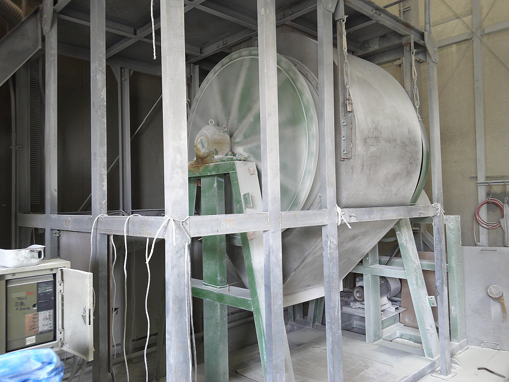
ご希望の粉砕粒度に合わせて、粉砕機種及び粉砕条件を選定し、粉砕品を製造します。
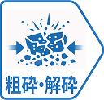
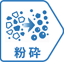
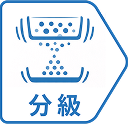
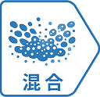
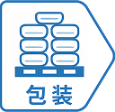
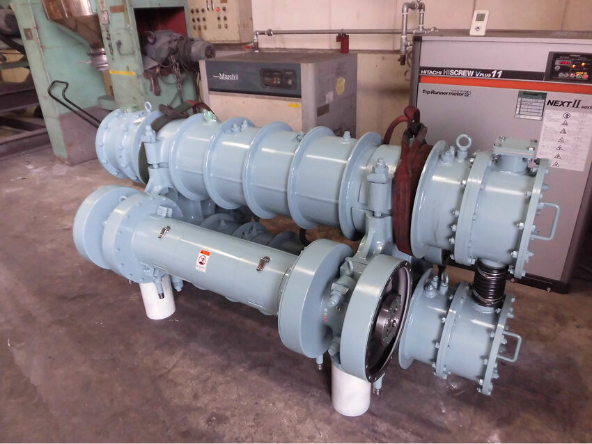
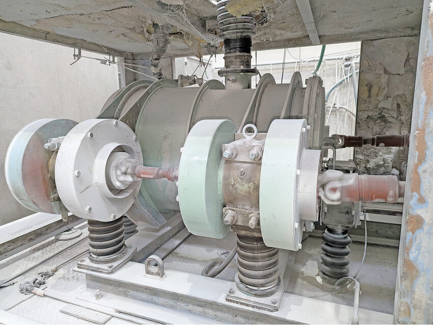
※粉体加工設備一覧は、このページの最下部にあります。
混合加工
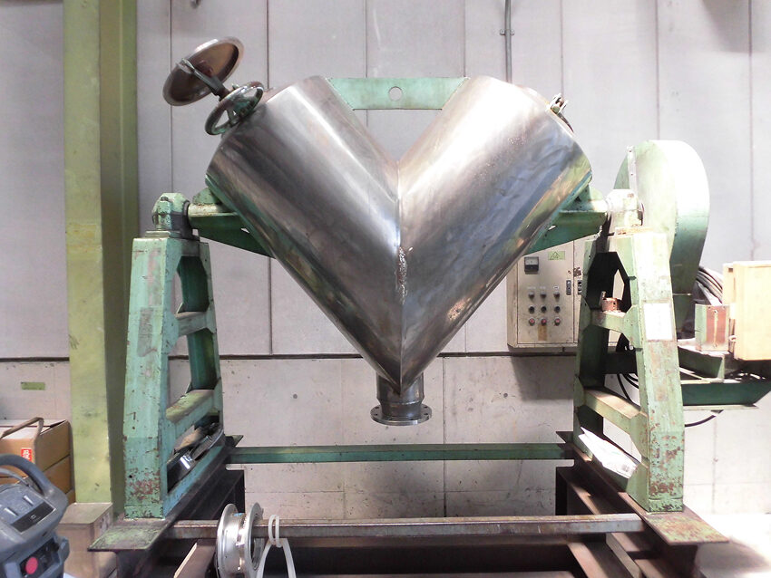
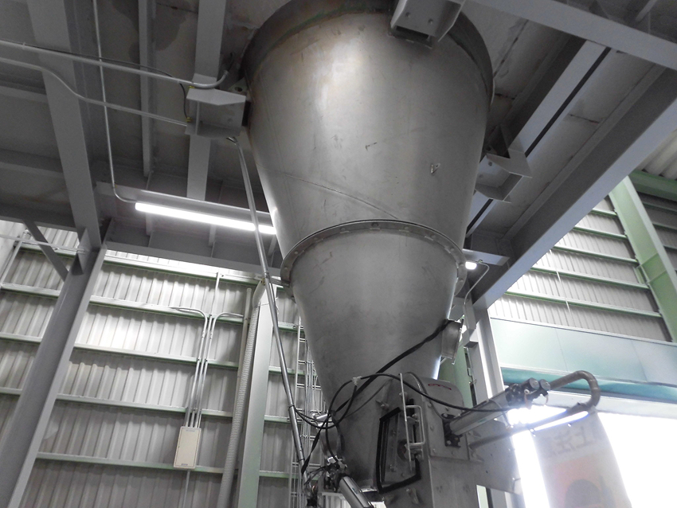
各種混合機の特性を活かした混合作業や添着作業を行います。
※粉体加工設備一覧は、このページの最下部にあります。
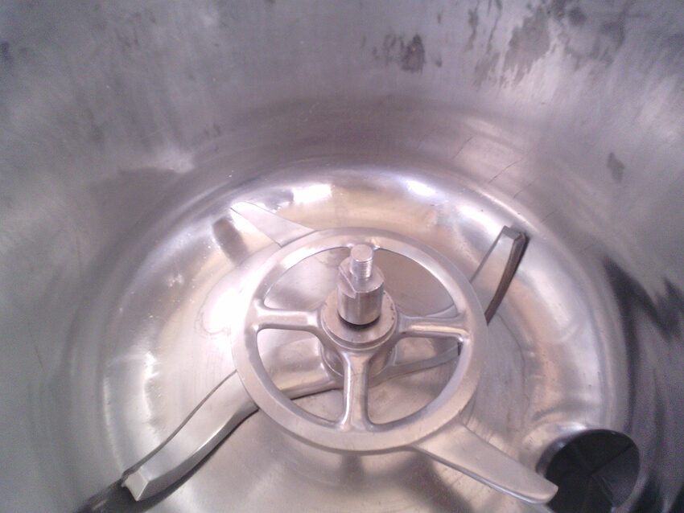
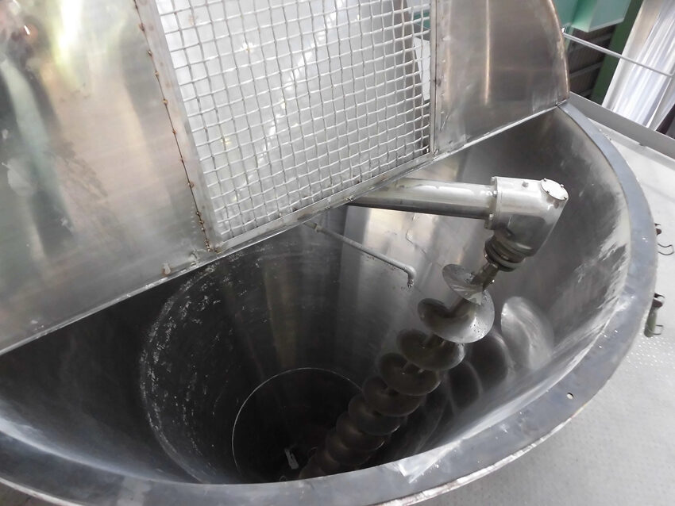
造粒加工
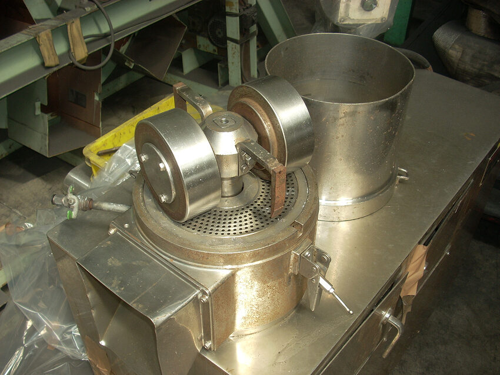
ご希望の造粒品の特性に応じた造粒機を選定し、造粒品を製造します。
湿式
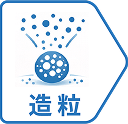
乾式
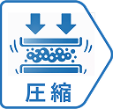
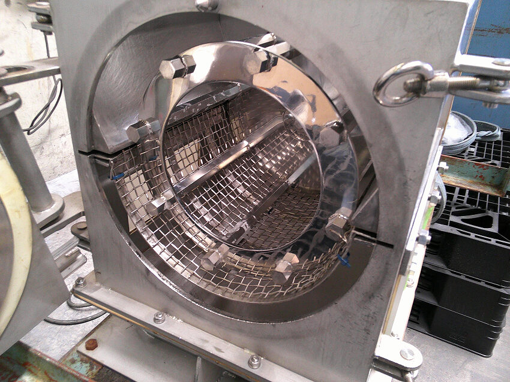
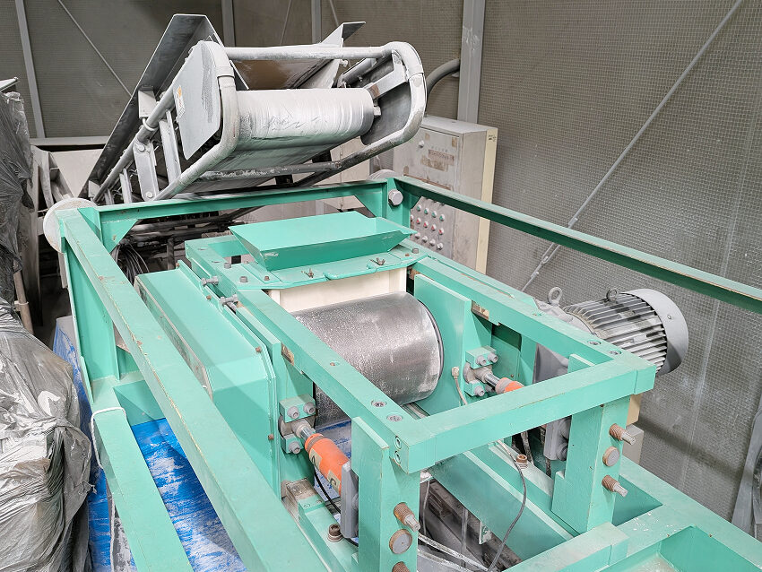
※粉体加工設備一覧は、このページの最下部にあります。
低温粉砕加工・冷凍粉砕加工
常温での粉砕が難しい低融点原料をMAX-30°C環境にて粉砕します。
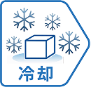
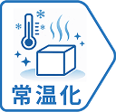
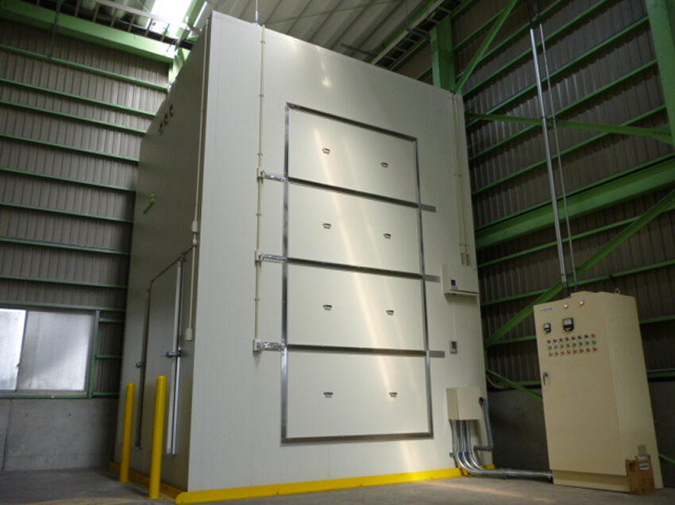
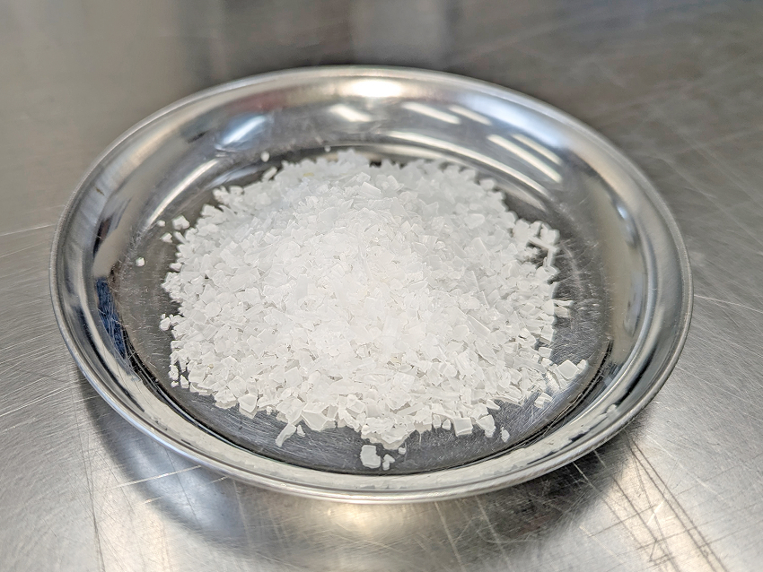
※粉体加工設備一覧は、このページの最下部にあります。
分級加工・乾燥加工・その他
乾燥加工
連続式、バッチ式の各種乾燥機を用い、造粒物や粉末の特性や適性に合わせて乾燥設備を選定し乾燥します。
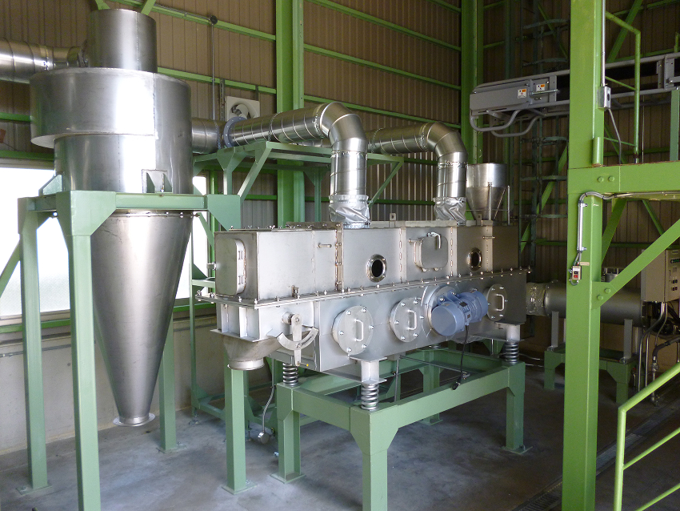
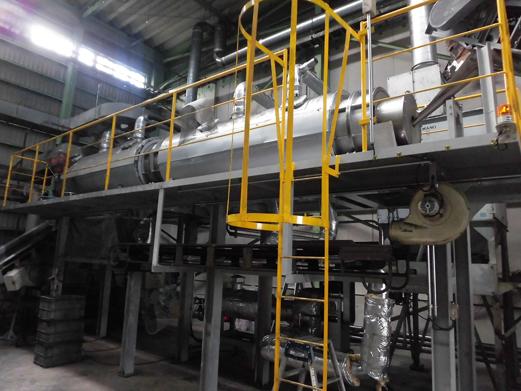
※粉体加工設備一覧は、このページの最下部にあります。
その他設備
粉粒体製品の詰め替え（リパック）を行います。
梱包については、お客様のご要望に合わせた梱包資材や重量での包装が可能です。
目的に応じた分析機器を選定し分析します。
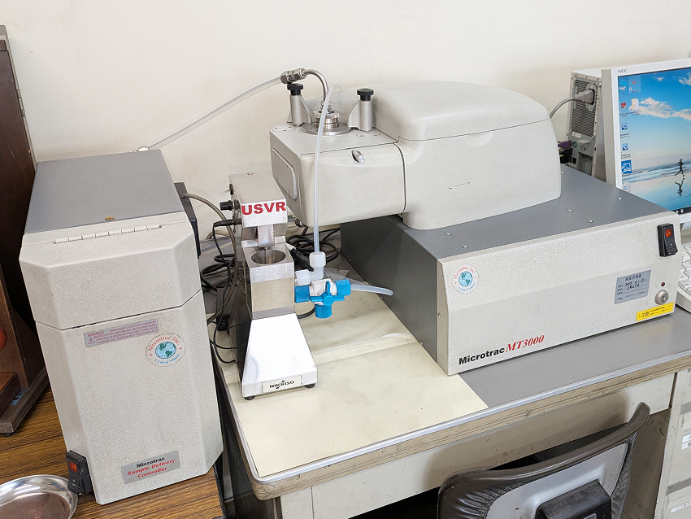
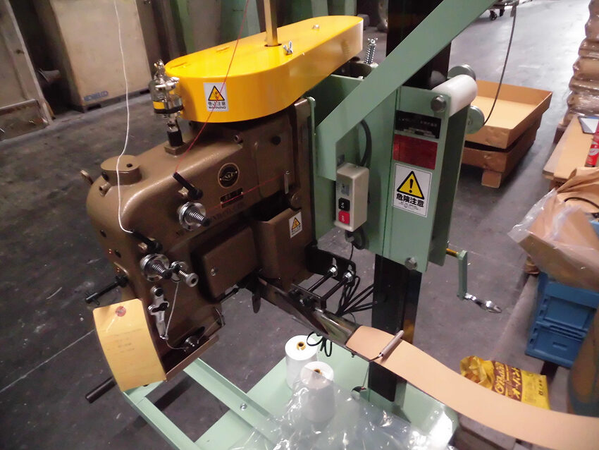
※粉体加工設備一覧は、このページの最下部にあります。
粉体受託加工への
お問い合わせ
粉体受託加工については、
フォームよりお問い合わせください。
※製鋼副資材、環境緑化資材のお問い合わせについては、各ページをご覧ください。
粉体加工設備一覧
※この表は横スクロールします
| 分類 | 名称 | サイズ・型式容量・能力(材質) | 台数 | 補足 |
|---|---|---|---|---|
| 粗砕機 | ジョークラッシャー | W300(SS)類 | 1台 | 前川工業製 |
| 1台 | 中山鉄工所製 | |||
| 粗砕機 | ロールクラッシャー | φ 460 (Mn) | 1台 | マキノ製 |
| φ 230 (アルミナ) | 1台 | |||
| 破砕・せん断機 | カッターミル | W800 (SS) | 1台 | 三力製作所製 |
| W910 (SS) | 1台 | |||
| W350 (SS) | 1台 | オリエント粉砕機製 | ||
| 粉砕機 | 自由粉砕機 | M-4型 (SUS) | 1台 | 奈良機械製 |
| サンプルミル | 小型試験機(SUS) | 1台 | ホソカワミクロン製 | |
| 微粉砕機 | アトマイザー | JIW型 (SS) | 1台 | ダルトン製 |
| EIIW型 (SS) | 2台 | |||
| バッチ式振動ミル | FV-100型 (アルミナ) | 2台 | 中央化工機製 | |
| FV-100型 (SUS) | 1台 | |||
| 連続式振動ミル | φ 200～300 (SS) | 6ライン | ||
| 連続式・バッチ式振動ミル | MB-3型 | 1台 | ||
| ボールミル | 全容2000 ℓ (アルミナ) | 1台 | ||
| 全容1000 ℓ (SUS) | 1台 | マキノ製 | ||
| 全容600 ℓ (SS) | 1台 | |||
| アトライター | 全容60 ℓ | 1台 | 三井三池工機 | |
| 低温粉砕機 | 低温粉砕ユニット | 約1~1.5t/日 | 1ユニット | −30℃ |
| 混合機 | ナウタミキサー | NX-35型 (SUS) | 1台 | ホソカワミクロン製 |
| NX-30型 (SUS) | 1台 | |||
| NX-30型 (SUS) | 1台 | 同上(噴霧装置付) | ||
| NX-10型 (SUS) | 1台 | ホソカワミクロン製 | ||
| スーパーミキサー | 全容200 ℓ (SUS) | 1台 | KAWATA製 | |
| 全容100 ℓ (SUS) | 1台 | |||
| Vブレンダー | 全容1000 ℓ (SUS) | 1台 | ||
| 全容500 ℓ (SUS) | 1台 | |||
| 全容70 ℓ (SUS) | 1台 | |||
| 全容3 ℓ (SUS) | 1台 | |||
| Wコーンブレンダー | 全容200 ℓ (SUS) | 1台 | ||
| 混練機 | 2軸ニーダ | 全容500 ℓ (SUS) | 1台 | (スチームジャケット付) |
| 全容200 ℓ (SUS) | 1台 | |||
| 造粒機（湿式） | ディスクペレッター | F-20型 | 1台 | ダルトン製 |
| F-5型 | 1台 | |||
| PV-5型 | 2台 | |||
| 造粒機（乾式） | ローラーコンパクター | φ 300 x W350 | 1台 | 杉山重工製 |
| 乾燥機（連続式） | ロータリー式乾燥機 | 全長8m（ガス式） | 1台 | 150℃ |
| 振動流動乾燥機 | 全長2m（ガス式） | 2台 | ||
| 乾燥機（バッチ式） | 棚型乾燥機 | 24トレー（ガス式） | 1台 | 250℃ |
| 28トレー（電気式） | 1台 | |||
| 乾燥混合機 | ナウタミキサー （ジャケット付） | 全長2000 ℓ (SUS) | 1台 | ジャケット圧 (0.2Mpa) |
| 分級機 | エアー分級機 | MS-1型 | 1台 | ホソカワミクロン製 |
| 振動篩機 | φ 1000 | 6台 | ダルトン製・興和製 | |
| φ 700 | 9台 | |||
| φ 400 | 2台 | |||
| 計量器 | 台秤 | ～1.5t | 8台 | |
| ～150kg | 10台 | |||
| 電子秤 | ～2.0kg | 3台 | ||
| 計測･梱包･その他 | 粒度分布測定装置 | MT3300EX Ⅱ | 1台 | マイクロトラック・ベル製 |
| ロータップ振とう機 | 2台 | 飯田製作所製 | ||
| 赤外線式水分計 | 3台 | Kett | ||
| ブレーン測定器 | 1台 | |||
| 硬度計 | 1台 | |||
| 袋口 ミシン機 | DS-C型 | 6台 | ニューロング工業製 | |
| 真空包装機 | V-480 | 1台 | TOSEI 製 | |
| シール機 | SG-600R | 2台 | 志賀包装機製 |
粉体受託加工への
お問い合わせ
粉体受託加工については、
フォームよりお問い合わせください。
※製鋼副資材、環境緑化資材のお問い合わせについては、各ページをご覧ください。